Logo
Logo resmi KarirLink — mark & lockup, versi warna dan putih. Palet primary & secondary di bawah diturunkan langsung dari warna logo ini.
Mark — Color
Favicon, ikon aplikasi, dan ruang sempit yang tidak cukup untuk lockup penuh.
karirlink-mark.svg

Mark — White
Mark di atas latar gelap atau bergradasi, mis. kartu AI Career Coach.
karirlink-mark-white.svg
Lockup — Color
Penempatan utama: header dan sidebar, area dengan cukup ruang horizontal.
karirlink-logo.svg
Lockup — White
Lockup di atas latar gelap, mis. footer gelap atau splash screen.
karirlink-logo-white.svg
Primary #22489e & secondary #f05925 diambil langsung dari warna logo di atas — lihat skala lengkap di bagian Colors.
Colors
Primary & secondary diturunkan langsung dari logo KarirLink, plus warna semantik. Tersedia sebagai utility bg-*, text-*, border-*.
50
100
200
300
400
500
600 base
700
800
900
950
50
100
200
300
400
500
600 base
700
800
900
950
Success
Warning
Danger
Info
Typography
Instrument Sans — satu keluarga font untuk judul, branding, dan teks antarmuka.
Aa Bb Cc 123
Aa Bb Cc
Regular · 400
Aa Bb Cc
Medium · 500
Aa Bb Cc
SemiBold · 600
Aa Bb Cc
Bold · 700
Selamat pagi, Ahmad
font-display · text-3xl · font-bold
Ringkasan Performa Lamaran
font-display · text-2xl · font-bold
Perlu Aksi Hari Ini
text-lg · font-semibold
Teks antarmuka standar untuk deskripsi kartu dan isi tabel.
text-sm · text-slate-600
Teks kecil untuk keterangan, metadata, dan timestamp.
text-xs · text-slate-500
text-[11px] · uppercase · tracking-wider
Icons
SVG inline bergaya outline, stroke 1.75, mewarisi currentColor.
home
briefcase
document
calendar
bookmark
message
settings
search
bell
sparkles
eye
chart-bar
check-circle
warning
clock
plus
logout
star
shield-check
chevron-right
Badges
Status pill untuk lamaran, prioritas, dan tag AI.
Avatars
Inisial sebagai fallback, status dot, dan grup bertumpuk.
Cards
Kartu dasar, kartu statistik, dan kartu hero bergradasi.
Basic Card
Kontainer default untuk mengelompokkan konten — border tipis, sudut membulat, dan shadow lembut.
.card
248
Lamaran Terkirim
.card + stat layout
AI Career Coach
Kartu hero bergradasi untuk fitur unggulan & highlight AI.
.bg-brand-gradient
Forms
Input, select, textarea, checkbox, radio, toggle, dan search.
Contoh: Product Designer, Data Analyst
Checkbox
Radio
Toggle
Search dengan shortcut
Tables
Tabel data dengan avatar, badge status, dan hover baris.
| Perusahaan | Posisi | Skor Kecocokan | Status | |
|---|---|---|---|---|
GJGojek |
Product Designer | 92% | Interview | |
TPTokopedia |
UI/UX Researcher | 78% | Ditinjau | |
TVTraveloka |
Frontend Engineer | 54% | Ditolak |
Alerts & Callouts
Aksen border kiri untuk tingkat urgensi, plus kotak rekomendasi AI.
Critical
Dipakai untuk kondisi yang butuh tindakan segera, mis. interview dalam hitungan jam.
Needs Attention
Kondisi penting namun belum mendesak, mis. CV belum diperbarui.
Info
Informasi netral, mis. pembaruan fitur atau tips umum.
Success
Konfirmasi hasil positif, mis. lamaran berhasil dikirim.
AI Recommendation & Impact
Kotak rekomendasi bertingkat di dalam kartu aksi — memberi konteks kenapa AI menyarankan sesuatu dan dampaknya.
Progress & Lainnya
Progress bar, tooltip, dan divider.